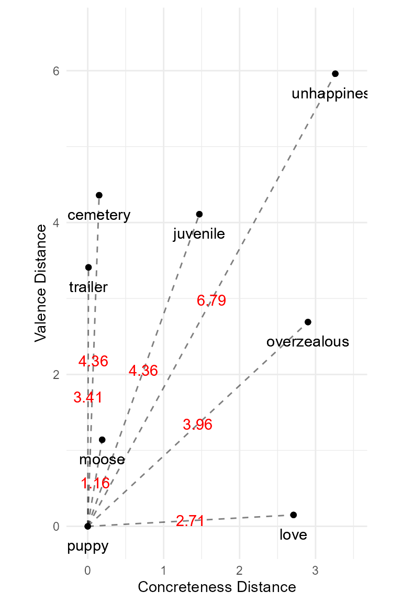
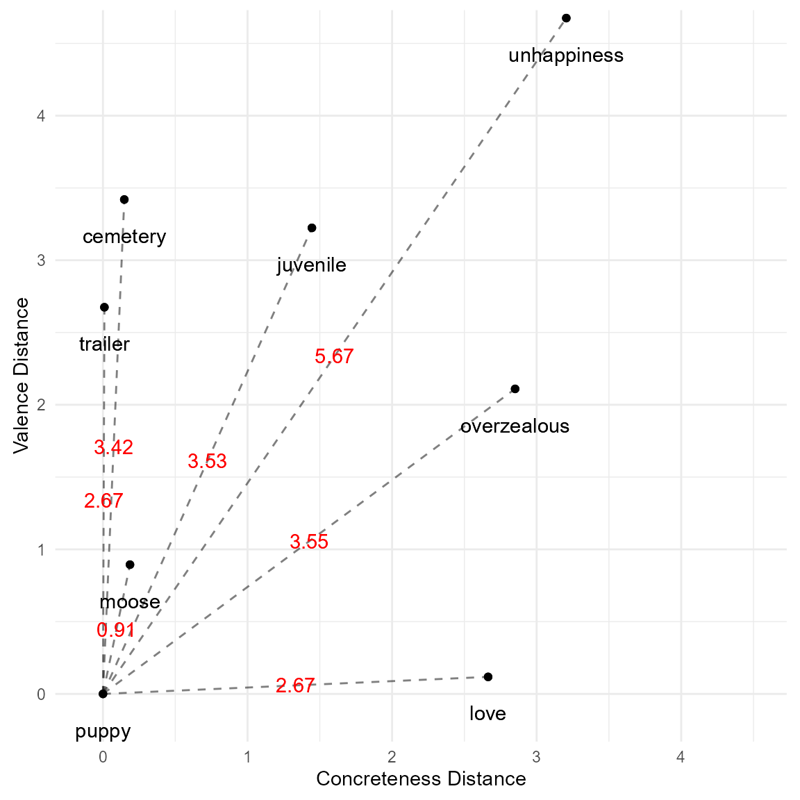
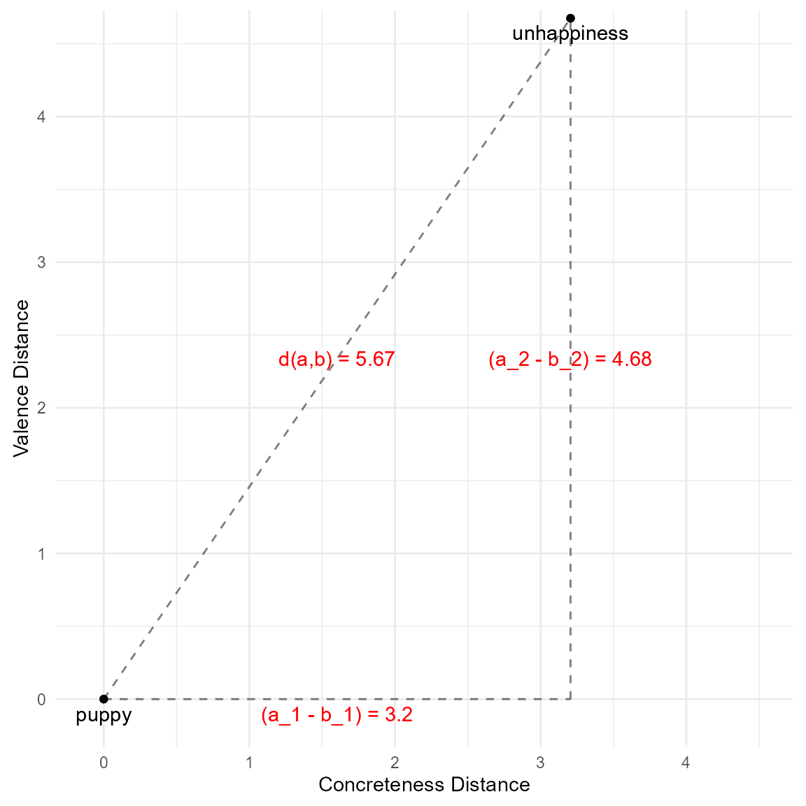
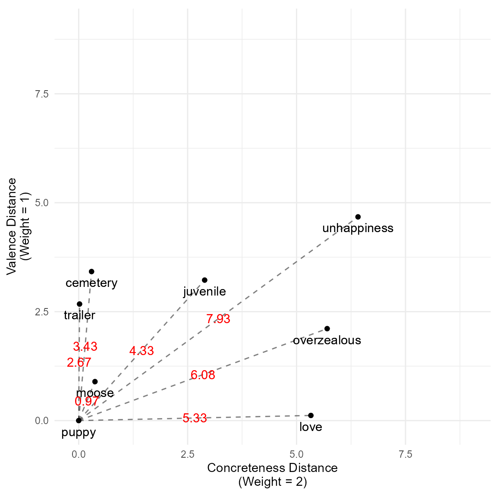
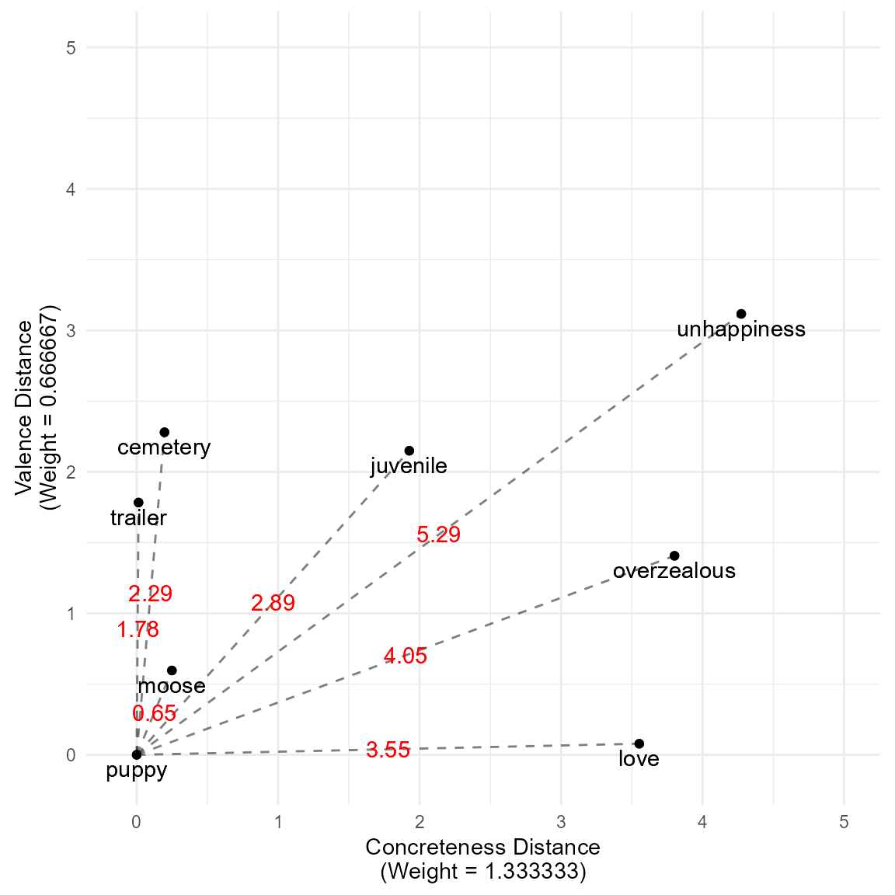
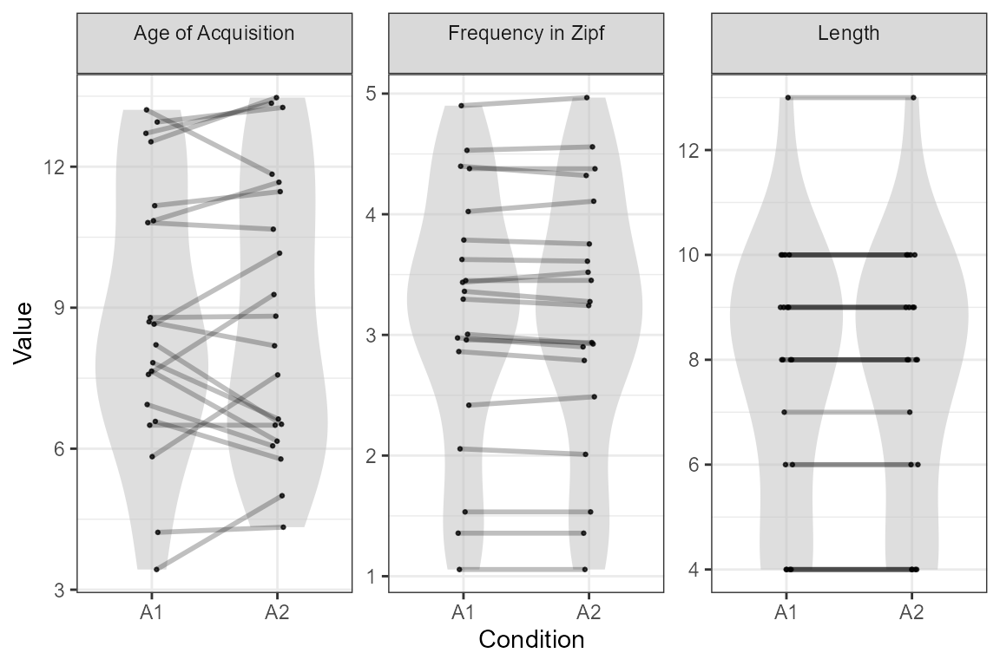
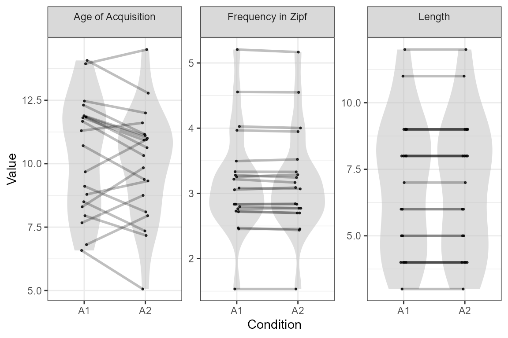
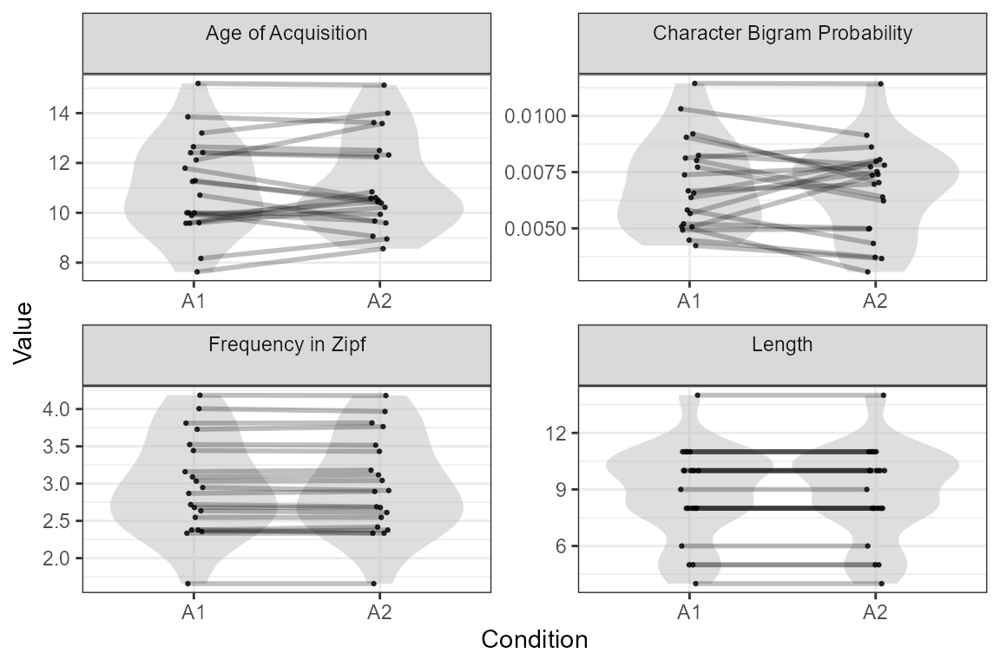

Euclidean distance can be a useful way of matching by or controlling
for multiple variables with greater flexibility than dealing with the
variables individually. This vignette explains how weighted and
unweighted Euclidean distance is calculated in LexOPS, gives example
usage with euc_dists() and match_item(), and
introduces the control_for_euc() function. The latter
allows you to generate stimuli controlling for Euclidean distance to a
match null within a Generate pipeline.
Euclidean distance is the straight-line distance between two points in -dimensional space. Between points and , the Euclidean distance is calculated as:
This section acts as an introduction to how LexOPS functions calculate Euclidean distance, with options for scaling and weighting variables.
Let’s imagine we want to find how close all other words are to “puppy”, on two variables:
The graph below represents the distance between some example words and “puppy”, in this (unscaled) 2-dimensional space. The lengths of the dashed lines represent the Euclidean distance of some example words from “puppy”, with the values presented in red:

As mentioned, however, the above plot shows the result when our
variables are not scaled. This is a problem, as the concreteness and
valence variables are differently scaled. Concreteness, from Brysbaert et
al. (2014), is scaled from 1 to 5. Emotional valence, from
Warriner et
al. (2013), is scaled from 1 to 9. If we want to give these
variables equal weighting, it makes sense to scale them both first. One
solution in R is the scale() function:
lexops_scaled <- mutate(
lexops,
CNC.Brysbaert = scale(CNC.Brysbaert),
VAL.Warriner = scale(VAL.Warriner)
)This makes our 2-dimensional space look like the plot below. The
dashed lines now reflect the values that we would get from the LexOPS
function euc_dists(), which scales dimensions by
default.

To visualise in more detail what is happening, Euclidean distance in 2-dimensional space is just Pythagoras’ theorem:
Where is “puppy”, and is “unhappiness”, this can simply be represented like this:

We can also apply weights to our scaled variables, to reflect relative importance in our distance calculation. This simply consists of multiplying the scaled variables’ distances by their weights :
As an example, if we decide to give concreteness twice the weight of valence, our 2D space would look like this:

Note, however, that now the distances overall have increased. We can
account for this by standardising our weights so they sum to the number
of dimensions. This is done by dividing by the mean of the weights. As a
result, c(1, 2) becomes
c(0.6666667, 1.3333333).

By default, LexOPS automatically standardises weights in this way so
that the distribution of distances overall remains similar. This is
useful when filtering the distances by a tolerance. This also means that
the weights c(0.5, 1), c(1, 2), and
c(50.2, 100.4) will all be equivalent. This behaviour can
be overridden with the argument
standardise_weights=FALSE.
Imagine you want to find a close match in terms of length, frequency (Zipf), age of acquisition, and concreteness, for the word “moose”. The values associated with “moose” on these variables look like this:
| string | Length | Zipf.BNC.Written | AoA.Kuperman | CNC.Brysbaert |
|---|---|---|---|---|
| moose | 5 | 2.985171 | 5.22 | 4.97 |
You could find possible matches with variable-specific tolerances like so:
lexops |>
match_item(
"moose",
Length = -1:1,
Zipf.BNC.Written = -0.2:0.2,
AoA.Kuperman = -2:2,
CNC.Brysbaert = -0.25:0.25
) |>
select(string, Length, Zipf.BNC.Written, AoA.Kuperman, CNC.Brysbaert) |>
head(5)| string | Length | Zipf.BNC.Written | AoA.Kuperman | CNC.Brysbaert |
|---|---|---|---|---|
| fudge | 5 | 3.138537 | 5.78 | 4.89 |
| crumb | 5 | 2.907010 | 5.89 | 4.80 |
| shack | 5 | 3.019540 | 6.15 | 4.93 |
| smock | 5 | 3.000235 | 6.26 | 4.78 |
| teacup | 6 | 2.868665 | 5.39 | 4.92 |
Simply sorting by Euclidean distance gives a very similar result, but with some slight differences. Whereas the variable-specific tolerances excluded “hippo” (because it is >0.2 Zipf away from “moose”), in Euclidean distance it is a relatively close word, because its distance in frequency is compensated by its proximity in the other variables. As a result, “hippo” is now suggested as a close match.
lexops |>
mutate(
Euc_Dist = euc_dists(lexops, "moose", c(Length, Zipf.BNC.Written, AoA.Kuperman, CNC.Brysbaert))
) |>
arrange(Euc_Dist) |>
filter(string != "moose") |>
select(string, Euc_Dist, Length, Zipf.BNC.Written, AoA.Kuperman, CNC.Brysbaert) |>
head(5)| string | Euc_Dist | Length | Zipf.BNC.Written | AoA.Kuperman | CNC.Brysbaert |
|---|---|---|---|---|---|
| fudge | 0.2722475 | 5 | 3.138537 | 5.78 | 4.89 |
| crumb | 0.2922062 | 5 | 2.907010 | 5.89 | 4.80 |
| shack | 0.3113690 | 5 | 3.019540 | 6.15 | 4.93 |
| hippo | 0.3832608 | 5 | 2.708964 | 5.79 | 4.93 |
| smock | 0.3903775 | 5 | 3.000235 | 6.26 | 4.78 |
If we want to match by Euclidean distance in the same space, but still have strict cut-offs for frequency, we could just do the following:
lexops |>
mutate(
Euc_Dist = euc_dists(lexops, "moose", c(Length, Zipf.BNC.Written, AoA.Kuperman, CNC.Brysbaert))
) |>
match_item(
"moose",
Euc_Dist = 0:Inf,
Zipf.BNC.Written = -0.2:0.2
) |>
select(string, Euc_Dist, Length, Zipf.BNC.Written, AoA.Kuperman, CNC.Brysbaert) |>
arrange(Euc_Dist) |>
head(5)| string | Euc_Dist | Length | Zipf.BNC.Written | AoA.Kuperman | CNC.Brysbaert |
|---|---|---|---|---|---|
| fudge | 0.2722475 | 5 | 3.138537 | 5.78 | 4.89 |
| crumb | 0.2922062 | 5 | 2.907010 | 5.89 | 4.80 |
| shack | 0.3113690 | 5 | 3.019540 | 6.15 | 4.93 |
| smock | 0.3903775 | 5 | 3.000235 | 6.26 | 4.78 |
| teacup | 0.4132710 | 6 | 2.868665 | 5.39 | 4.92 |
Additionally, we can set weights such that frequency accounts for
more of Euclidean distance than other variables, with the
weights argument:
lexops |>
mutate(
Euc_Dist = euc_dists(
lexops, "moose", c(Length, Zipf.BNC.Written, AoA.Kuperman, CNC.Brysbaert),
weights = c(1, 2, 1, 1)
)
) |>
arrange(Euc_Dist) |>
select(string, Euc_Dist, Length, Zipf.BNC.Written, AoA.Kuperman, CNC.Brysbaert) |>
head(5)| string | Euc_Dist | Length | Zipf.BNC.Written | AoA.Kuperman | CNC.Brysbaert |
|---|---|---|---|---|---|
| shack | 0.2555832 | 5 | 3.019540 | 6.15 | 4.93 |
| crumb | 0.2675454 | 5 | 2.907010 | 5.89 | 4.80 |
| smock | 0.3133074 | 5 | 3.000235 | 6.26 | 4.78 |
| fudge | 0.3356149 | 5 | 3.138537 | 5.78 | 4.89 |
| peanut | 0.3748464 | 6 | 3.089176 | 5.00 | 4.89 |
Similarly, we may want to design a study comparing concrete and abstract words, controlling for length, frequency, and age of acquisition. With variable specific tolerances, our code may look like this:
stim <- lexops |>
split_by(CNC.Brysbaert, 1:2 ~ 4:5) |>
control_for(Length, 0:0) |>
control_for(Zipf.BNC.Written, -0.1:0.1) |>
control_for(AoA.Kuperman, -2:2) |>
generate(20)## Generated 1/20 (5%). 1 total iterations, 1.00 success rate.Generated 2/20 (10%). 2 total iterations, 1.00 success rate.Generated 3/20 (15%). 3 total iterations, 1.00 success rate.Generated 4/20 (20%). 5 total iterations, 0.80 success rate.Generated 5/20 (25%). 9 total iterations, 0.56 success rate.Generated 6/20 (30%). 10 total iterations, 0.60 success rate.Generated 7/20 (35%). 12 total iterations, 0.58 success rate.Generated 8/20 (40%). 13 total iterations, 0.62 success rate.Generated 9/20 (45%). 14 total iterations, 0.64 success rate.Generated 10/20 (50%). 17 total iterations, 0.59 success rate.Generated 11/20 (55%). 19 total iterations, 0.58 success rate.Generated 12/20 (60%). 21 total iterations, 0.57 success rate.Generated 13/20 (65%). 24 total iterations, 0.54 success rate.Generated 14/20 (70%). 25 total iterations, 0.56 success rate.Generated 15/20 (75%). 30 total iterations, 0.50 success rate.Generated 16/20 (80%). 31 total iterations, 0.52 success rate.Generated 17/20 (85%). 32 total iterations, 0.53 success rate.Generated 18/20 (90%). 33 total iterations, 0.55 success rate.Generated 19/20 (95%). 35 total iterations, 0.54 success rate.Generated 20/20 (100%). 36 total iterations, 0.56 success rate.This will generate stimuli with the following distributions in controls:
plot_design(stim, "controls")
To generate a similar stimulus set controlling for Euclidean
distance, we could use the control_for_euc() function. Like
euc_dists() this has options for scaling and weighting
variables. The weights here reflect the relative importance of variables
as controls. Generally, variables with lower weights are permitted to
vary to a greater extent. As mentioned, the
weights supplied will, by default, be standardised to average to 1
(i.e., to sum to the number of dimensions).
stim2 <- lexops |>
split_by(CNC.Brysbaert, 1:2 ~ 4:5) |>
control_for_euc(
c(Length, Zipf.BNC.Written, AoA.Kuperman),
0:0.1,
name = "euclidean_distance",
weights = c(0.5, 1, 0.1)
) |>
generate(20)## Generated 1/20 (5%). 1 total iterations, 1.00 success rate.Generated 2/20 (10%). 8 total iterations, 0.25 success rate.Generated 3/20 (15%). 11 total iterations, 0.27 success rate.Generated 4/20 (20%). 12 total iterations, 0.33 success rate.Generated 5/20 (25%). 14 total iterations, 0.36 success rate.Generated 6/20 (30%). 17 total iterations, 0.35 success rate.Generated 7/20 (35%). 18 total iterations, 0.39 success rate.Generated 8/20 (40%). 19 total iterations, 0.42 success rate.Generated 9/20 (45%). 20 total iterations, 0.45 success rate.Generated 10/20 (50%). 21 total iterations, 0.48 success rate.Generated 11/20 (55%). 24 total iterations, 0.46 success rate.Generated 12/20 (60%). 25 total iterations, 0.48 success rate.Generated 13/20 (65%). 31 total iterations, 0.42 success rate.Generated 14/20 (70%). 33 total iterations, 0.42 success rate.Generated 15/20 (75%). 36 total iterations, 0.42 success rate.Generated 16/20 (80%). 38 total iterations, 0.42 success rate.Generated 17/20 (85%). 40 total iterations, 0.42 success rate.Generated 18/20 (90%). 44 total iterations, 0.41 success rate.Generated 19/20 (95%). 49 total iterations, 0.39 success rate.Generated 20/20 (100%). 51 total iterations, 0.39 success rate.This will generate stimuli with the following distributions in controls. As you can see, we’ve generated stimuli that are closely matched in length and frequency, and more loosely matched in Age of Acquisition:
plot_design(stim2, c("Length", "Zipf.BNC.Written", "AoA.Kuperman"))
We may then decide that we also want to control for another variable,
bigram probability. However, we want to control for this variable with a
specific tolerance in the original units. LexOPS lets you do this by
combining control_for_euc() with control_for()
as many times as required.
stim3 <- lexops |>
split_by(CNC.Brysbaert, 1:2 ~ 4:5) |>
control_for_euc(
c(Length, Zipf.BNC.Written, AoA.Kuperman),
0:0.1,
name = "euclidean_distance",
weights = c(0.5, 1, 0.1)
) |>
control_for(BG.BNC.Written, -0.0025:0.0025) |>
generate(20)## Generated 1/20 (5%). 2 total iterations, 0.50 success rate.Generated 2/20 (10%). 4 total iterations, 0.50 success rate.Generated 3/20 (15%). 6 total iterations, 0.50 success rate.Generated 4/20 (20%). 7 total iterations, 0.57 success rate.Generated 5/20 (25%). 11 total iterations, 0.45 success rate.Generated 6/20 (30%). 18 total iterations, 0.33 success rate.Generated 7/20 (35%). 26 total iterations, 0.27 success rate.Generated 8/20 (40%). 30 total iterations, 0.27 success rate.Generated 9/20 (45%). 32 total iterations, 0.28 success rate.Generated 10/20 (50%). 33 total iterations, 0.30 success rate.Generated 11/20 (55%). 36 total iterations, 0.31 success rate.Generated 12/20 (60%). 37 total iterations, 0.32 success rate.Generated 13/20 (65%). 40 total iterations, 0.32 success rate.Generated 14/20 (70%). 41 total iterations, 0.34 success rate.Generated 15/20 (75%). 42 total iterations, 0.36 success rate.Generated 16/20 (80%). 43 total iterations, 0.37 success rate.Generated 17/20 (85%). 44 total iterations, 0.39 success rate.Generated 18/20 (90%). 47 total iterations, 0.38 success rate.Generated 19/20 (95%). 49 total iterations, 0.39 success rate.Generated 20/20 (100%). 56 total iterations, 0.36 success rate.Which will give us the following distributions:
plot_design(stim3, c("Length", "Zipf.BNC.Written", "AoA.Kuperman", "BG.BNC.Written"))
We could use a similar method to give variable-specific tolerances
for variables in the Euclidean space. For example, we could control for
Length with both Euclidean distance, and a call to
control_for() to make sure that the number of characters
match exactly.
One last thing to note is that generating stimuli controlled for
Euclidean distance can make your stimulus generation more flexible, but
also slower. This is because LexOPS cannot use some of the heuristics it
applies when matching items with variable-specific tolerances to exclude
inappropriate matches, and because Euclidean distance has to be
recalculated each iteration (in fact, control_for_euc() is
just a wrapper for control_for_map()). As a result,
variable-specific tolerances may be more useful if computational
efficiency is important.